Incastro Turni
Incastro TurniNovità · in arrivo
App per i turnisti
Desiderata dal telefono. Turni con una notifica.
I colleghi scelgono su un calendario ferie e giorni da evitare, entro la scadenza che decidi tu: le richieste arrivano da sole in Incastro Turni. Quando pubblichi, i turni compaiono su telefono, tablet e computer, con un avviso. E se correggi un turno, ognuno vede subito che cosa è cambiato.
Arriva con la versione 0.1.7 · iPhone, Android, tablet e computer · nessun account per i medici
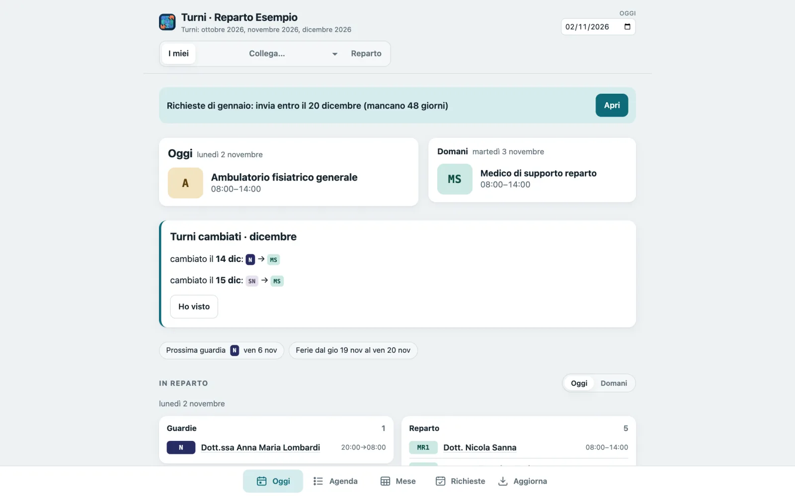
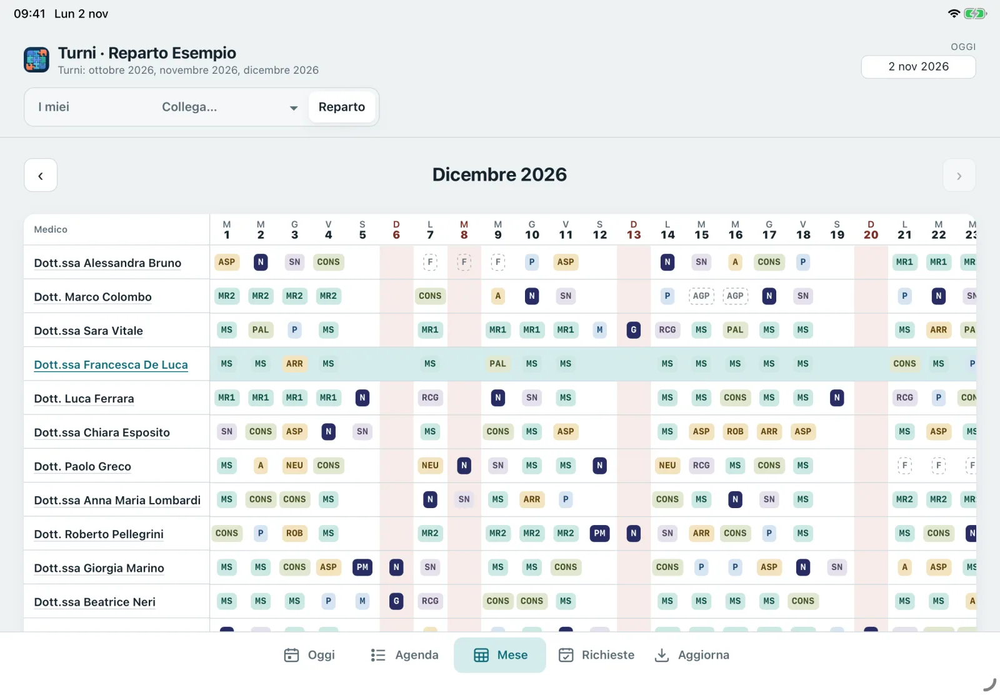
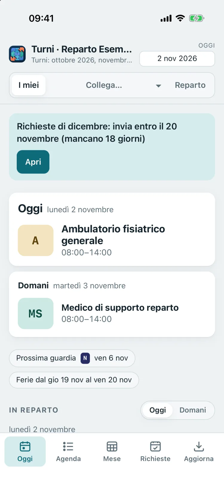
Il giro del mese
Dalle richieste ai turni sul telefono. Senza fogli da raccogliere.
Il coordinatore lavora come sempre in Incastro Turni, sul suo computer. I colleghi usano solo il telefono.
- InvitaUn'e-mail dalla tua posta, oppure WhatsApp o un QR.
- InstallaIl collega tocca il link e aggiunge l'app alla schermata Home.
- RichiesteFerie e giorni da evitare, entro la scadenza.
- AggiornaLe richieste compaiono nei desiderata del mese.
- PubblicaI turni arrivano su ogni dispositivo, con un avviso.
- CorreggiChi è coinvolto vede che cosa cambia, e tu vedi chi l'ha visto.
Inviti tutti, con un clic.
Dalla pagina Medici premi Invita tutti: ogni collega riceve un'e-mail dalla tua casella di posta (Gmail, iCloud o la posta dell'ospedale) con il suo invito personale. Se preferisci, lo stesso invito parte su WhatsApp o si fa inquadrare con un QR.
- Ogni invito è personale, vale una volta sola e scade dopo due settimane
- C'è anche un codice breve da scrivere a mano, se il link non si apre
- Telefono nuovo? Un nuovo invito, e il vecchio telefono si scollega
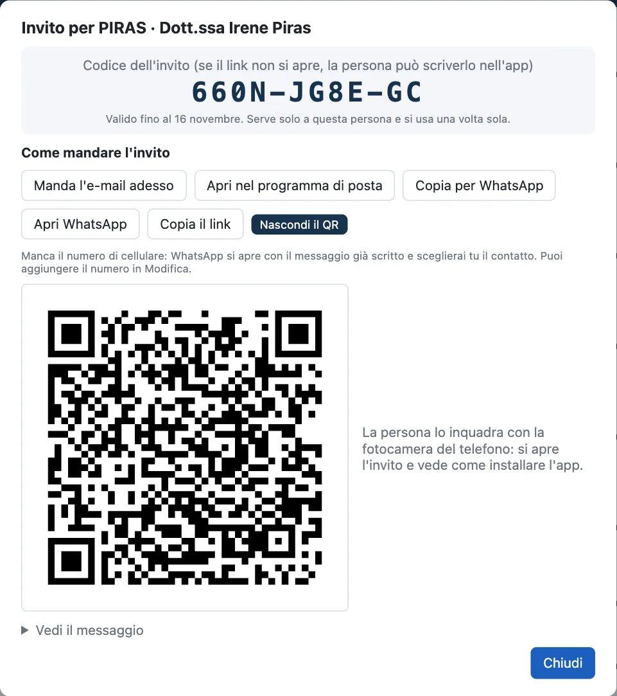
Un tocco sul link. L'app è sulla Home.
Il collega apre il link sul telefono e trova una guida per immagini, adatta al suo telefono, per aggiungere l'app alla schermata Home. Il nome dell'icona è già scritto. Al primo avvio l'app trova l'invito da sola, mostra subito i turni già pubblicati e chiede se avvisarlo quando ne escono di nuovi.
Non serve passare dall'App Store o da Google Play, né creare un account.
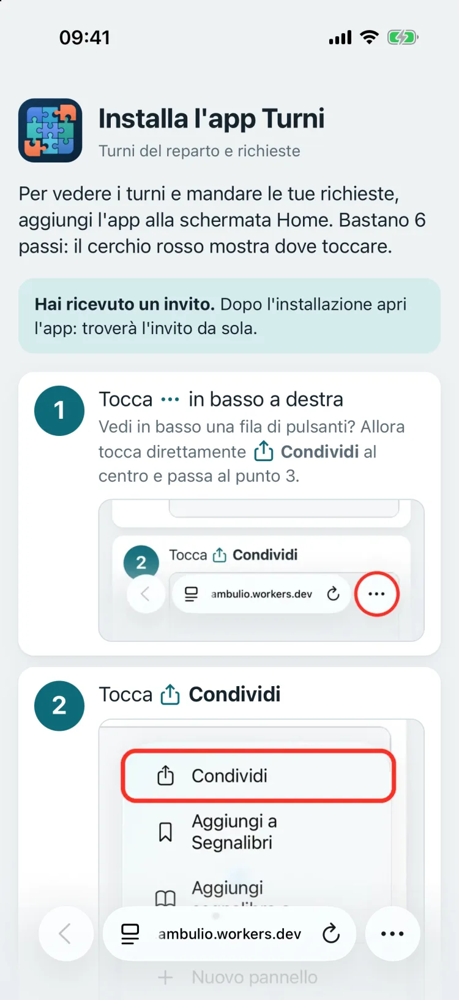
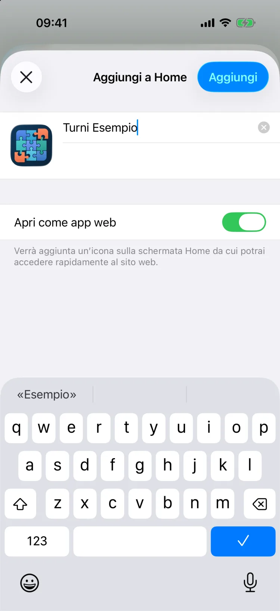
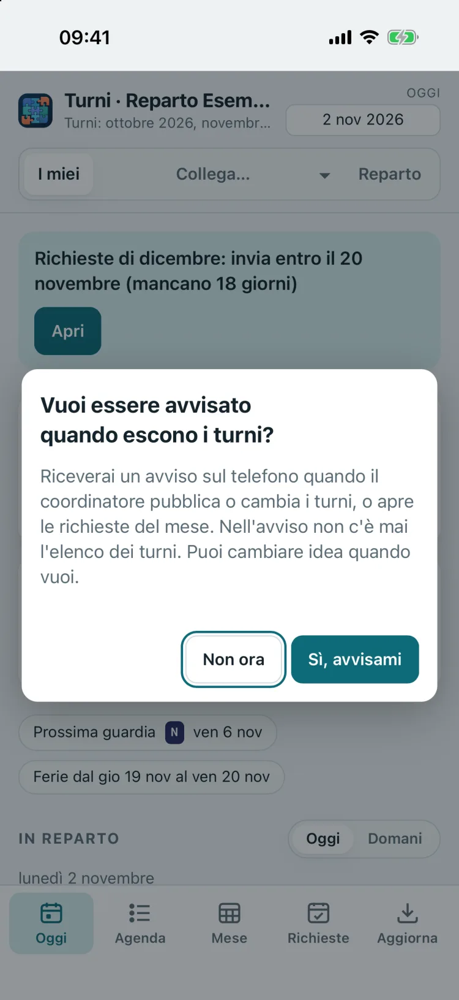
Su iPhone e iPad
- Tocca il link dell'invito: si apre Safari con la guida.
- Tocca ⋯ oppure Condividi, poi Visualizza altro.
- Scegli Aggiungi alla schermata Home e tocca Aggiungi.
- Apri l'app dalla Home: l'invito si completa da solo.
- Tocca Sì, avvisami e poi Consenti.
Servono iOS 16.4 o successivo. Se il link si apre dentro WhatsApp o un'app di posta, la pagina spiega come passare a Safari.
Su Android
- Tocca il link dell'invito: si apre il browser con la guida.
- Tocca Installa, oppure il menu ⋮ e poi Installa app.
- Apri l'app: l'invito è già lì.
- Tocca Sì, avvisami e consenti le notifiche.
Con Chrome, Edge o Samsung Internet.
Sul computer
- Chiedi al coordinatore un invito per un altro dispositivo.
- Apri il link nel browser (Chrome, Edge, Safari, Firefox): il computer è subito collegato.
- Se vuoi, installala come app o aggiungila al Dock.
Telefono, tablet e computer restano collegati insieme.
Le richieste, su un calendario.
Nella scheda Richieste il collega tocca un giorno, o più giorni di fila, e sceglie che cosa chiedere: ferie, aggiornamento, «niente notte», «preferisco il pomeriggio»… con una nota breve se serve. In alto vede sempre la scadenza fissata dal coordinatore e quanti giorni mancano.
- Le voci vengono dal catalogo del reparto: niente testi da interpretare
- Si possono correggere e reinviare fino alla scadenza
- Dopo la scadenza, o a turni pubblicati, il telefono non invia più
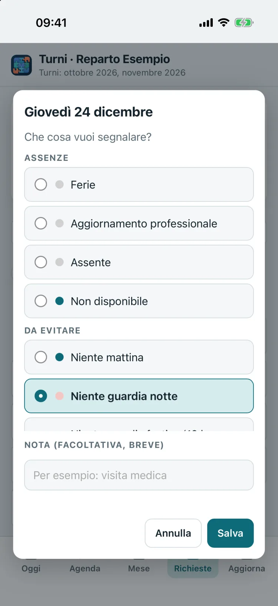
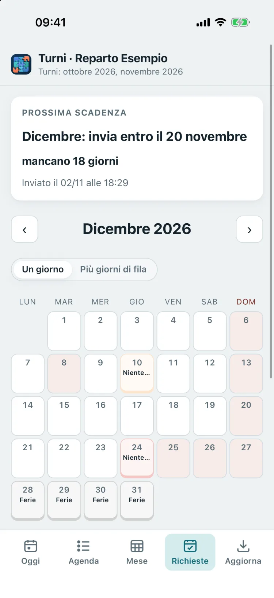
Le richieste arrivano nei desiderata.
Nella scheda Desiderata del mese premi Aggiorna: le richieste compaiono nella griglia di sempre, con il segno «dal telefono» nell'angolo della cella. Sopra, chi ha già inviato e chi no.
- Le celle che hai modificato tu restano tue: una nuova richiesta non le sovrascrive, te lo segnala
- Quello che arriva dopo la scadenza viene messo da parte
- «Ricorda a chi non ha inviato» avvisa solo chi manca
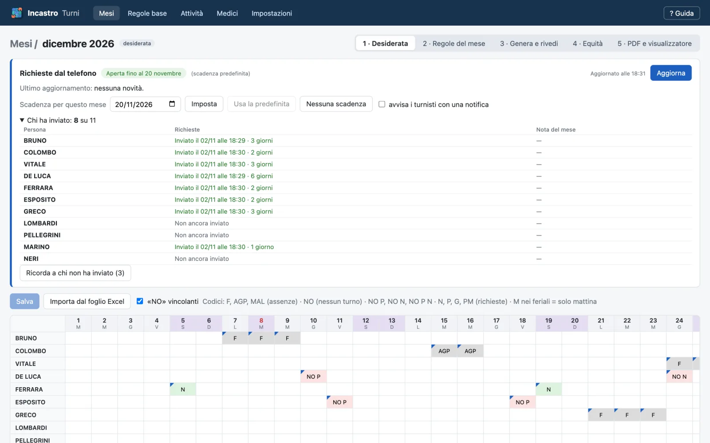
Pubblichi. I turni sono già sul telefono.
Generi il turno come sempre, lo controlli e premi Pubblica: Incastro Turni lo consegna a ogni dispositivo collegato e manda un avviso, «Sono pubblicati i turni di dicembre». I turni restano salvati sul telefono e si vedono anche senza rete.
- I miei turni, il mese, chi c'è in reparto giorno per giorno
- Esportazione nel calendario del telefono
- Nell'avviso non c'è mai l'elenco dei turni
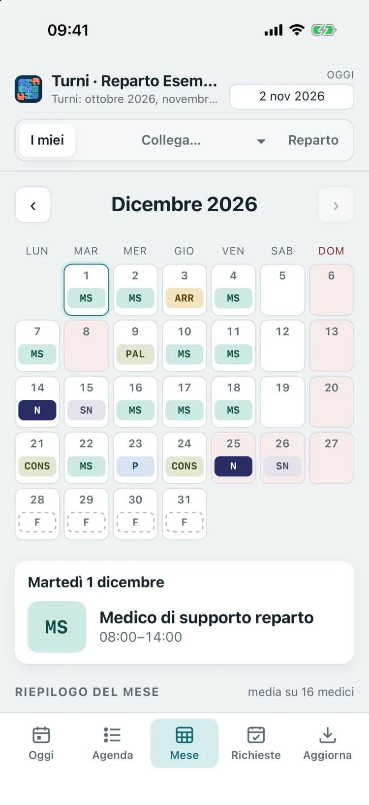
Una correzione? Lo sanno subito.
Se cambi un turno già pubblicato, Incastro Turni ti mostra che cosa cambia rispetto ai telefoni e chiede se avvisare. Chi è coinvolto riceve «Cambia il tuo turno del 14» e sul telefono trova il riquadro Turni cambiati, con il prima e il dopo.
Accanto al turno vedi chi lo ha già visto: «Visti da 11 su 11».
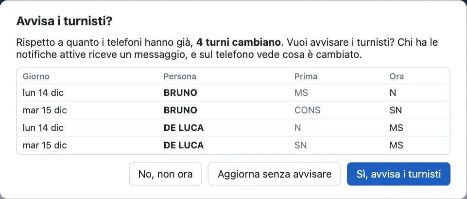
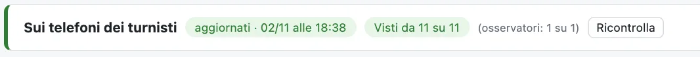
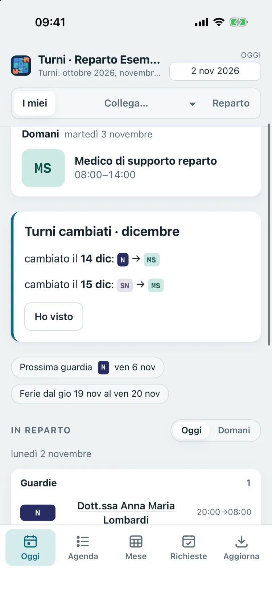
Funzioni
Pensata per il reparto vero.
Telefono, tablet e computer.
Ogni collega può collegare più dispositivi: il telefono in tasca, il tablet a casa, il computer dell'ambulatorio. Turni e avvisi arrivano a tutti; le richieste si possono mandare da quello che si preferisce.
- Sul computer funziona nel browser, senza installare nulla
- Sul tablet, il turno di tutto il reparto in una griglia
Le richieste anche dal computer.
Nel browser il calendario delle richieste si usa con il mouse: un clic su un giorno, Maiusc per un intervallo, Ctrl (⌘ sul Mac) per giorni sparsi.
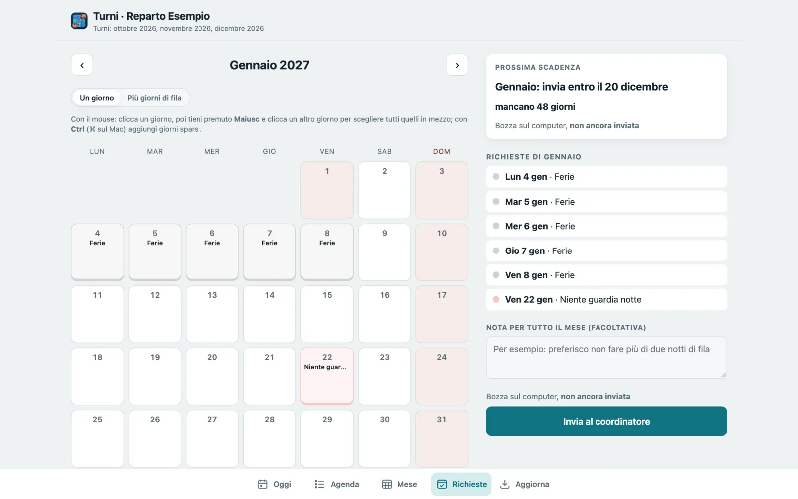
Il direttore vede. Senza essere nel turno.
Il direttore di UOC, altri dirigenti, la coordinatrice o tu stesso potete ricevere i turni come osservatori: vedono il turno di tutto il reparto e gli avvisi di pubblicazione, ma non compaiono in turni, equità, desiderata o PDF, e non mandano richieste.
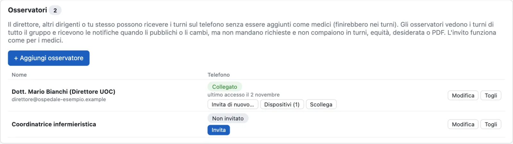
Il nome giusto sull'icona. E la scadenza.
Scegli il nome che i colleghi vedranno sotto l'icona, per esempio «Turni Cardiologia», e una scadenza predefinita per le richieste, come «entro il 20 del mese prima». Ogni mese la puoi spostare.
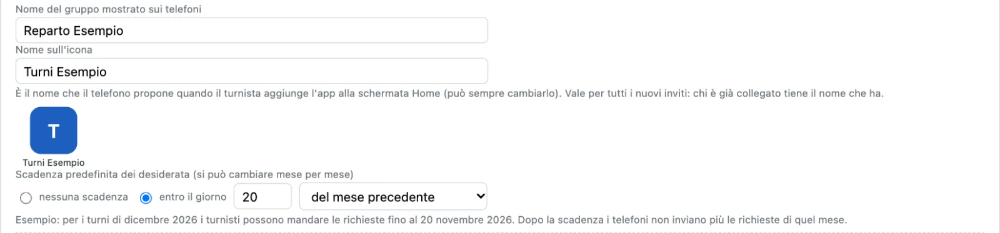
Riserva senza servizio
Il link cifrato da mandare su WhatsApp resta: chi non vuole collegarsi vede comunque i turni.
Posta tua
Gli inviti partono dal tuo indirizzo: la password resta nel portachiavi del computer.
Facoltativa
Si attiva in Impostazioni quando vuoi. Senza, Incastro Turni funziona come prima.
Sicurezza e privacy
Cifrato da un capo all'altro. Custodito solo il tempo necessario.
Tra il computer del coordinatore e i telefoni c'è un servizio di passaggio: un deposito temporaneo di buste chiuse. Le buste si aprono solo sul dispositivo a cui sono destinate.
Cifratura da un capo all'altro
Turni e richieste viaggiano in buste cifrate che si aprono solo sul dispositivo destinatario. Le chiavi nascono sui dispositivi e non li lasciano mai. Ogni busta è firmata: nessuno può alterarla o inventarla.
Un deposito, non un archivio
Ogni busta si cancella appena il destinatario la ritira, e comunque entro 45 giorni.
Nessun nome sul servizio
Nomi, e-mail, numeri di telefono e nome del reparto non ci arrivano mai: il servizio conosce solo codici casuali.
Niente account, niente password
I medici non si registrano da nessuna parte: si entra con l'invito personale, che vale una volta sola.
I dati veri restano sul PC
Archivio, regole, storico e turni restano sul computer del coordinatore. Se il servizio sparisse, non si perde nulla.
Servizio in Unione Europea
I dati del servizio, cioè buste chiuse e codici casuali, sono conservati in Unione Europea.
Che cosa conserva il servizio, e per quanto
L'elenco completo, utile per la valutazione del responsabile della protezione dei dati (DPO) della vostra azienda.
| Che cosa | Fino a quando |
|---|---|
| Buste cifrate (turni, richieste, scadenze) | Fino al ritiro da parte del destinatario, al massimo 45 giorni. |
| Inviti in attesa (busta di benvenuto cifrata) | Fino a quando l'invito viene usato o scade. |
| Codici casuali del reparto e dei dispositivi, con le loro chiavi pubbliche e il giorno dell'ultimo accesso | Finché il collegamento è attivo; un dispositivo scollegato si cancella dopo 30 giorni, un reparto inattivo dopo 12 mesi. |
Mai sul servizio: nomi, e-mail, numeri di telefono, nome del reparto o dell'ospedale, turni o richieste leggibili.
Gli avvisi passano dal servizio di notifica del telefono o del browser (Apple, Google o Mozilla), come per qualsiasi app, e contengono solo una frase breve come «Sono pubblicati i turni di dicembre». Questa pagina descrive come funziona l'app: la valutazione sulla protezione dei dati resta della vostra azienda.
Domande
Prima di cominciare.
Bisogna scaricare qualcosa dagli store?
No. L'app si aggiunge alla schermata Home direttamente dalla pagina che si apre con l'invito, su iPhone e su Android. Sul computer funziona nel browser.
Che cosa succede se un collega cambia telefono?
Il coordinatore gli manda un nuovo invito: quando lo usa, il vecchio telefono si scollega. Per aggiungere un tablet o il computer, invece, c'è l'invito «per un altro dispositivo», e restano collegati tutti.
E chi non vuole installare nulla?
Il turno resta disponibile come sempre: PDF da stampare e link cifrato da mandare su WhatsApp, da aprire nel browser.
Si può mandare una richiesta dopo la scadenza?
No: dopo la scadenza, o quando i turni del mese sono già pubblicati, il telefono non invia più per quel mese e lo dice chiaramente. Per i cambi tardivi si parla con il coordinatore.
Le richieste dal telefono sostituiscono quelle che ho scritto io?
No. Le celle dei desiderata che il coordinatore ha modificato a mano restano come sono: se dal telefono arriva qualcosa di diverso, Incastro Turni lo segnala e decidi tu.
Chi vede le richieste dei colleghi?
Solo il coordinatore, nell'app sul suo computer. Gli altri colleghi e gli osservatori vedono i turni pubblicati, non le richieste.
In arrivo con la versione 0.1.7.
L'app per i turnisti arriva con il prossimo aggiornamento di Incastro Turni, che si installa da solo. È facoltativa e si attiva in Impostazioni. Nelle immagini nomi, sigle e reparto sono di fantasia.